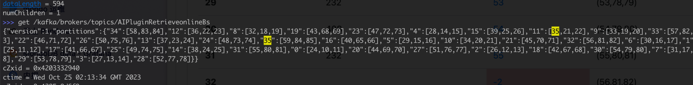
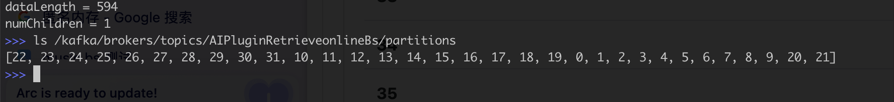
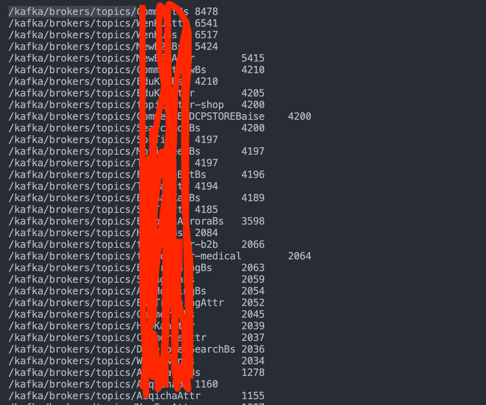
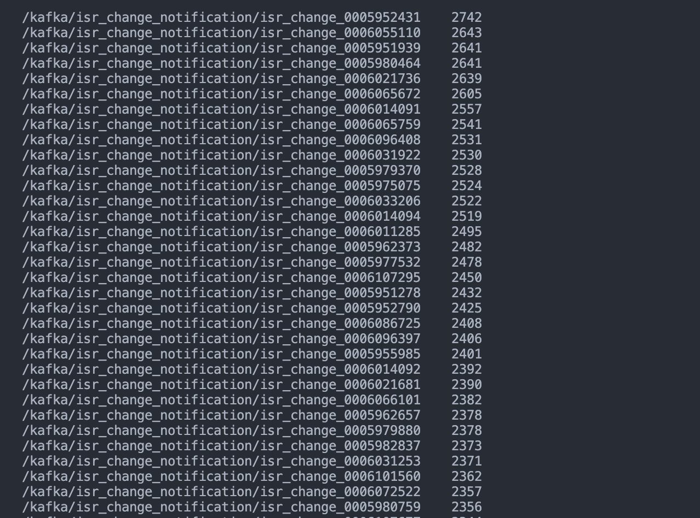
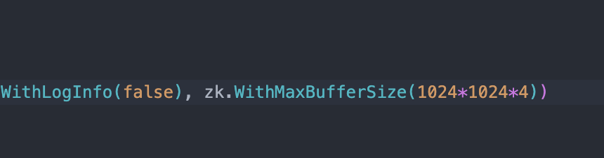
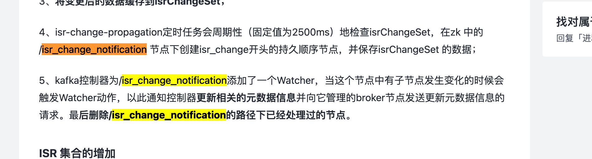
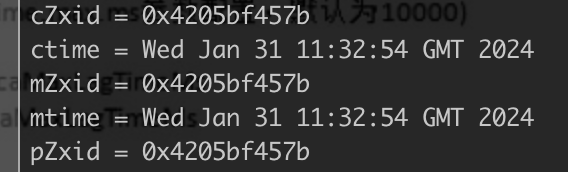

一般在 kafka 集群频繁出现 under replicated partitions 的场景下出现 …
现象
业务方在 kafka-manager 上对 topic AIPluginRetrieveonlineBs 的 partition 进行扩容失败，新扩出来的 partition 的 leader 和 isr 均为空

zk 路径中，/kafka/brokers/topics/AIPluginRetrieveonlineBs 的值包含新扩出来的 32、33、34、35

但是 /kafka/brokers/topics/AIPluginRetrieveonlineBs/partition 中却没有 32、33、34、35 的信息，这和 kafka manager 页面上展示的信息基本可以对得上。

问题排查
首先，大致可以猜到是 controller 的问题，那么就先切 controller，也就是把 zk 中的 /kafka/controller 节点 delete 掉，但是发现没用。
登录 controller 对应的机器，发现 logs/server.log 中有大量的如下日志：
1 | [2024-02-02 19:58:34,153] WARN Session 0x360851b6e6b50000 for server bddwd-ps-beehive-agent187791.bddwd.baidu.com/10.41.105.210:2181, unexpected error, closing socket connection and attempting reconnect (org.apache.zookeeper.ClientCnxn) |
查阅资料后发现，zk client 给单次通信预留的最大 buffer 为 4 MB，从日志上看基本上可以确定是返回的数据超过了 4 MB，导致 controller 无法正常启动。
网上给的解决方案基本都是调大 zk client 的 buffer 配置，但是不幸的是，出问题的 kafka 集群有 100 个实例，升级成本非常高。
那么就需要找出异常的数据。首先怀疑是某个 zk 节点存储的数据过大，于是写了一个程序筛了一下，为了将可疑 zk 路径全部找出，程序中 zk client 对于单次数据请求预留的 buffer 设置为了 10MB 。结果发现最大的数据也才不到 8 KB。

除了 get 外，可能还存在 ls 操作。 发现 /kafka/isr_change_notification 下有大量的子文件

用程序 ls 一下，并将 buffer 设置为 4MB，果然挂了

1 | -> % ./iterate_zk /kafka/isr_change_notification test.txt |
那么基本就定位问题了。
isr_change_notification 是干啥的？

https://juejin.cn/post/6844904021250015239
也就是说，如果 controller 之前就是卡死的话，就会导致这个路径下的文件无法处理，如果堆积的数据超过一定的阈值，在切 controller 之后，新的 controller 会因为 4MB buffer 限制导致无法加载 /kafka/isr_change_notification 下的数据。
故障恢复
故障 kafka 集群有 100 个实例，600 多 topic，并且实例都部署在混布池中，预期 isr 的变化会比较多，所以决定根据 mtime 参数，将时间早于 2024.02.02 的数据全部删掉

在删掉大概 11w 02.02 之前的数据后，剩余的数据 kafka controller 自己就开始处理了
清理程序样例
代码是基于另外一个 kafka 运维脚本临时改的，针对此特殊场景部分代码逻辑有待优化
1 | package main |